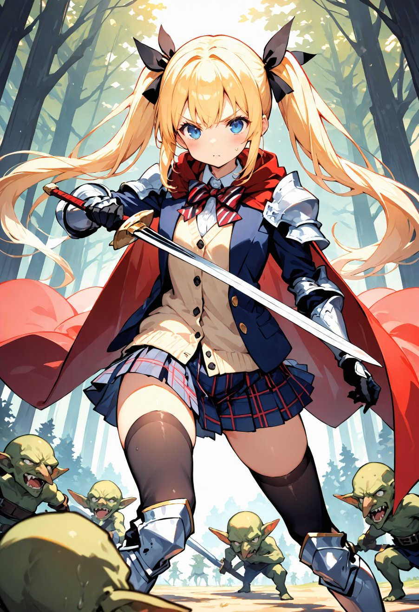
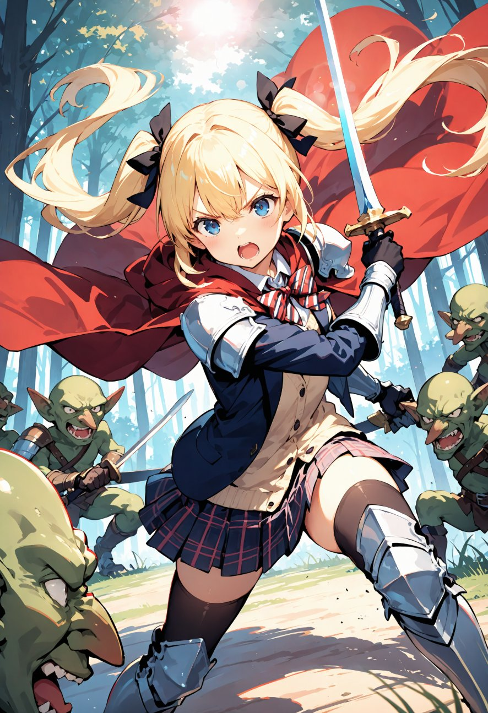

第8話
美桜ちゃんは城下町を後にし、広がる森の中を進んでいた。 小鳥のさえずりと木々のざわめきが心地よい。 だが、油断していたその時――。
「ギャギャッ！」
突然、茂みの奥から奇妙な声が響いた。
「な、なに！？」
振り返ると、小柄で緑色の肌をしたゴブリンが数匹、牙をむいてこちらを睨んでいた。 手には木の棍棒や錆びた短剣を握っている。
「あれは……ゴブリン？」
小説やアニメでしか見たことがないモンスターが目の前にいた。 美桜ちゃんの心臓が早鐘のように打ち始めた。 手の中の剣がずっしりと重く感じられる。 これまで訓練場で騎士たちと軽く模擬戦をしただけの美桜ちゃんにとって、本物の戦闘は初めてだった。

ゴブリンたちは一斉に襲いかかってきた。
「ど、どうしよう！？」
美桜ちゃんは一瞬、足がすくんで動けなくなる。 しかし、その瞬間、胸に下げたミユ姫からもらったペンダントが微かに光った。
「……だいじょうぶ。私なら、できる！」
深呼吸をして、いつもの笑顔を浮かべる。 目の前の敵が何だって、自分らしくやるしかない。
「こっちだよ、ゴブリン！」
美桜ちゃんは剣を構え、一気に前へ踏み出した。 1匹のゴブリンが突進してきたが、美桜ちゃんは華麗に身をひねってかわす。 続けざまに剣を振り下ろし、棍棒を持ったゴブリンを弾き飛ばした。

「よし！いける！」
調子を取り戻した美桜ちゃんは、次々とゴブリンを倒していく。 1匹の突進をかわして腹を突くと、別の1匹が振るう短剣を剣で弾き落とす。 最後のゴブリンは棍棒を振り回しながら突っ込んできたが、剣で受け止めると同時に力強く弾き飛ばした。 倒れたゴブリンが再び立ち上がろうとした瞬間、美桜ちゃんは素早く間合いを詰めて剣を振り抜いた。 最後の1匹を倒し、美桜ちゃんは剣を収めて胸を張った。
「ふぅ……なんとか勝てた！私、やっぱり結構強い！？」
緊張していたのが嘘のように、笑顔がこぼれる。 しかし足元を見ると、ゴブリンに足を掴まれた拍子で制服の裾が少し裂けているのに気づく。
「えぇ～、これ直さなきゃじゃん！お気に入りなのに！」
文句を言いながらも、心は晴れやかだ。 初めての戦闘を乗り越えた美桜ちゃんは、再び歩き出した。 次に待ち受ける冒険を胸に抱きながら――。
― この話はここまで ―